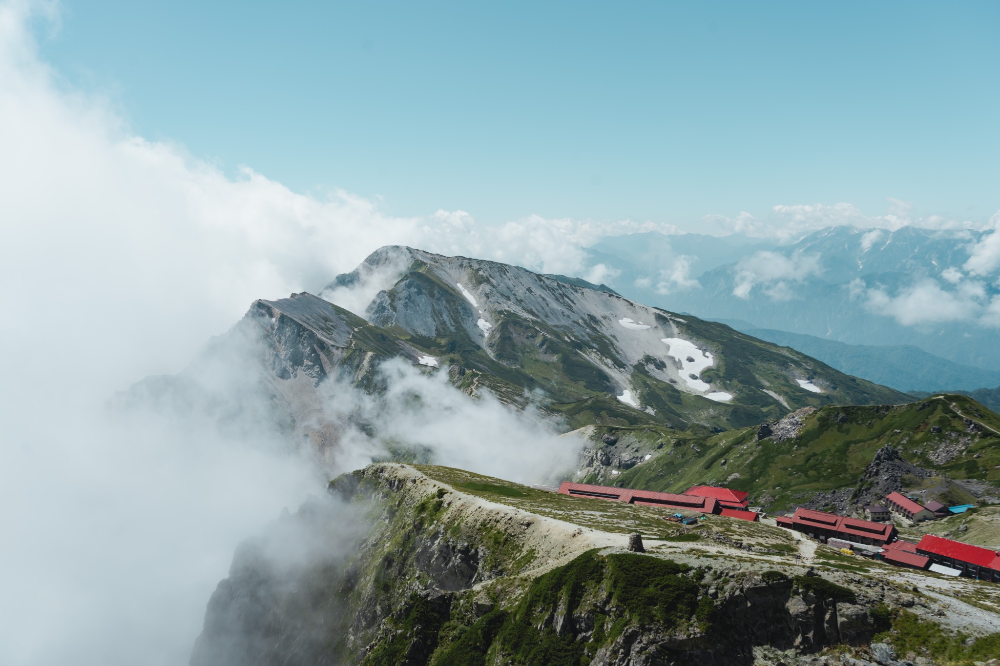
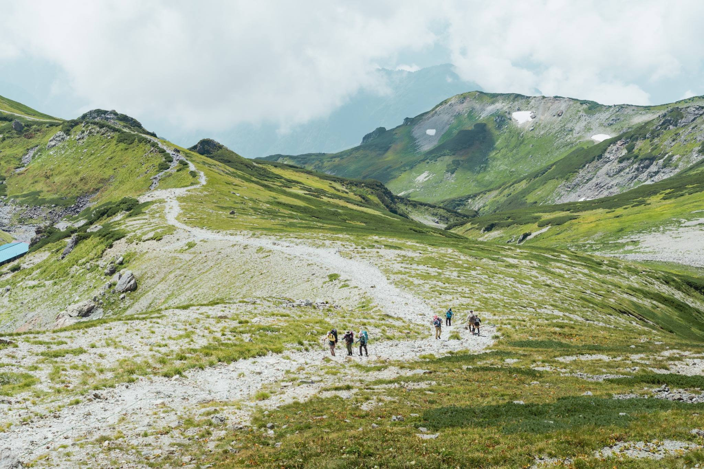

Highlight
雲端山莊、白馬大池與稜線溫泉。
搭纜車至 1,900 公尺起登，走過開闊濕原與白馬大池，再入住白馬山莊。最後沿白馬三山稜線前往白馬鑓溫泉，在山谷與星空旁泡湯，作為縱走後的獎勵。

4 Days Journey in Northern Alps. 雲海、稜線、山屋與山谷溫泉，把夏季北阿爾卑斯一次收進旅程。
搭纜車至 1,900 公尺起登，走過開闊濕原與白馬大池，再入住白馬山莊。最後沿白馬三山稜線前往白馬鑓溫泉，在山谷與星空旁泡湯，作為縱走後的獎勵。
白馬稜線開闊而壯麗，每一步都能看見雲影、山屋與遠方連綿的北阿爾卑斯。
白馬車站集合 → 栂池自然園起登 → 白馬大池山莊進入高山濕原與大池營地，讓身體慢慢適應山上的節奏。
白馬大池山莊 → 白馬岳 → 白馬山莊沿著開闊稜線前進，抵達日本最大級山屋之一的白馬山莊。
白馬山莊 → 杓子岳 → 白馬鑓ヶ岳 → 白馬鑓溫泉小屋完成白馬三山主稜縱走，最後下切至山谷溫泉。
白馬鑓溫泉小屋 → 猿倉登山口 → 白馬車站解散從高山回到山麓，帶著四天的稜線記憶結束旅程。


